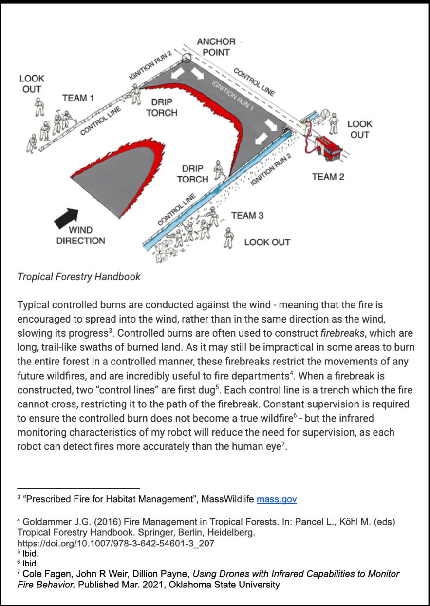

Wildland Firefighting Robot Research Project
Independent For-Credit Research Project, High School Junior Year
As an independent research project I conducted in-depth research into how robots could be used to combat forest fires, culminating in the construction of a scale prototype. I began by researching trends in wildfires and forestry management and confirming that wildland fires are becoming worse, on average, every year. This is primarily because, before human settlement, forests were adapted to have small clearing fires every year. These fires cleared away dead trees, which was beneficial to the forest. In fact, some species of pinecone only open under immense heat, a specific adaptation calculated to take advantage of the periodic fire clearing. However, humans have been preventing these small fires and allowing dead wood to pile up and unprecedented levels. When fires do start today, they feed on this excess fuel and grow too large to control. The solution is to conduct controlled burns, restoring the forests to their natural state. However, conducting controlled burns is both highly important and uniquely unsuitable as a job for humans. It's incredibly dangerous, requires long hours far from civilization, and even the best crews can't cover the millions of acres of forest required to set things right.

This is your project description text. This sidenote stays green and floats to the right! The layout remains clean and focuses on your documentation.